Advocacy Outreach
200 Depot Street,
P. O. Box 169, Elgin,
Texas 78621
Phone 512 281-4180
FAX 512 281-9599
Even Start Summer Program 2012
Water, Water Everywhere!!
~ Page 3 ~
Took a trip to Symphony Square to see Roy Loranzo’s Ballet Folkorico and enjoy the Instrument petting zoo.
Down in San Antonio we went to the Institute of Texan Cultures to see the Timeless Texas Toys exhibit with Ms. Sarah, explore the Exhibit floor, watch the Dome Show and listen to the Texas Trails & Tales outside of the building.
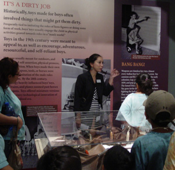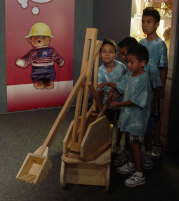

Austin Planetarium visited us at the gym at Excel and provided two wonderful shows about our galaxy.
Camp activities; reading, playing games, learning about water, sports, learned about TNT (Towards No Tobacco use) program, making new friends, art activities, swimming, acting, and so much more.
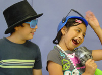 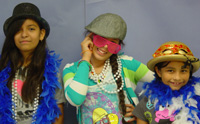
We visited Bob Bullock Museum and watched the IMAX movie “To the Arctic”, and another trip we went to see the movie “Ice Age, The Continental Drift”, seeing more about how water affect all life on our planet.
We took a tour of the Pflugerville Waste Water Treatment Plant, then had lunch and play time at Gilliland Park, then enjoyed a swim at Lake Pflugerville.
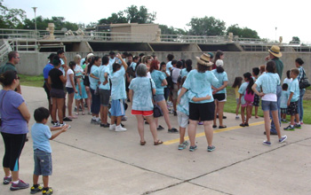 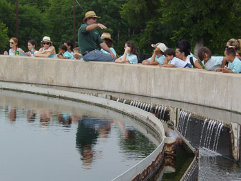
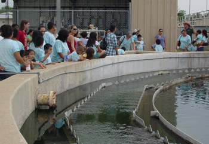 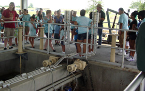
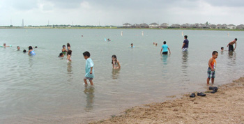
Pollyanna Theater at the Long Center presented a wonderful play called “Rapunzel’s Bad Hair Day”, after which the children played in the water park next to the center.
Duck Tours of Austin took us on a wild and fun ride through Austin and in to the lake!
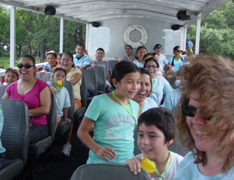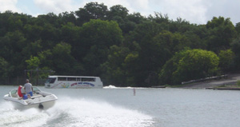
Volente Beach Water Park on Lake Travis was our last day of camp and we all had a great time!

<<Back ~ Page 1 ~ Page 2 ~ Page 3